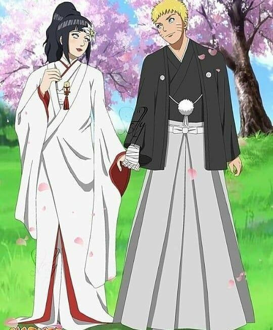
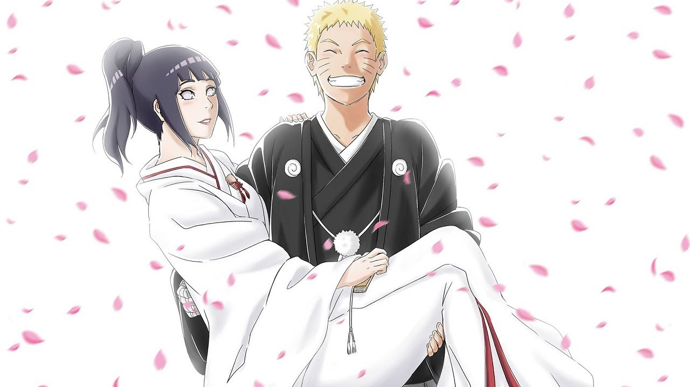
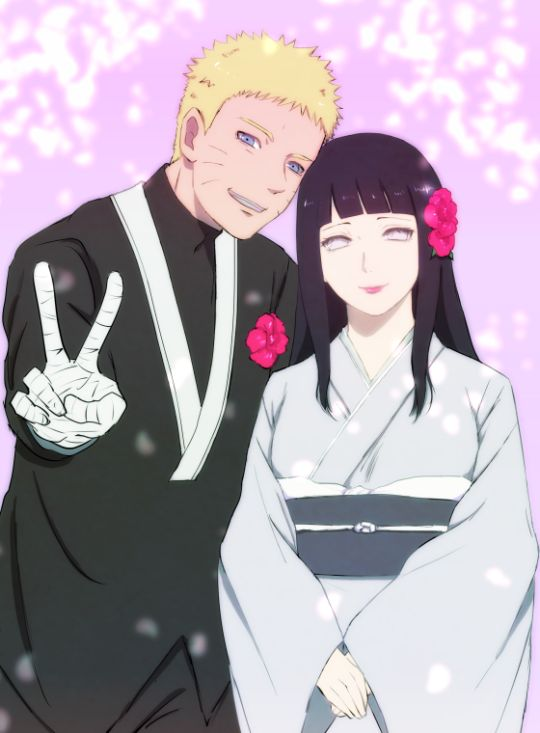
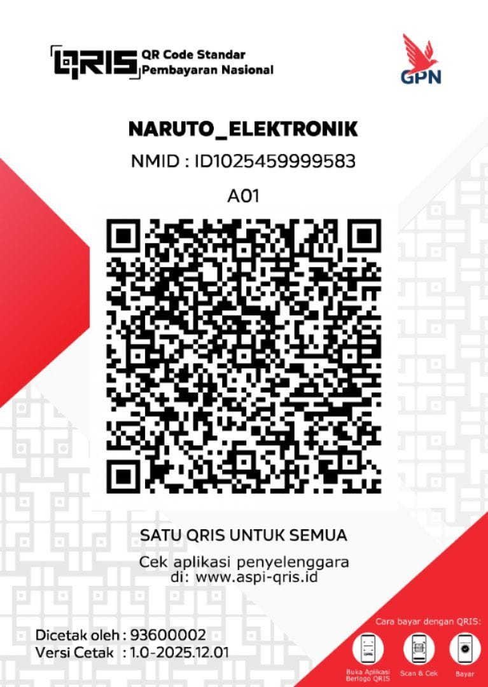

.jpg)
Naruto Uzumaki
Putra dari
Minato Namikaze
&
Ibu Khusina Uzumaki
Jumat, 20 November 2026
Kepada Yth.Bapak/Ibu/Saudara/iDengan penuh sukacita dan memohon berkat Tuhan, kami mengundang Bapak/Ibu/Saudara/i untuk hadir di hari bahagia kami.
Lihat UndanganKiranya perjalanan baru ini selalu dipenuhi kasih, kesetiaan, kebahagiaan, dan penyertaan Tuhan.
Putra dari
Minato Namikaze
&
Ibu Khusina Uzumaki
Putri dari
Bapak Hiashi Hyūga
&
Ibu Hyūga
Sabtu, 12 Desember 2026 • 10.00 WIB
Jumat, 20 November 2026
10.00–11.30 WIB
Gereja HKBP Pondok Cabe
Jumat, 20 November 2026
12.00 WIB–selesai
Gedung Serbaguna HKBP Pondok Cabe
10.00 WIB Pemberkatan Pernikahan
11.30 WIB Makan Siang
12.00 WIB Acara Adat Batak
14.00 WIB Pesta Pernikahan
Jl. Kayu Manis Raya No.63, Pd. Cabe Udik, Kec. Pamulang, Kota Tangerang Selatan, Banten 15418
📍 Buka Google Maps


Doa dan kehadiran Bapak/Ibu/Saudara/i merupakan hadiah terindah bagi kami. Jika berkenan memberikan tanda kasih secara digital, dapat melalui rekening atau QRIS berikut.
BANK RAKYAT INDONESIA
No. Rekening
005901117254505a.n. Rahul Josua Situmorang

Scan QRIS untuk memberikan tanda kasih.
Merupakan suatu kehormatan dan kebahagiaan bagi kami apabila Bapak/Ibu/Saudara/i berkenan hadir dan memberikan doa restu.
Tuhan memberkati.